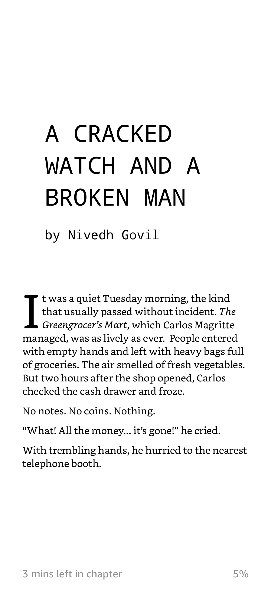
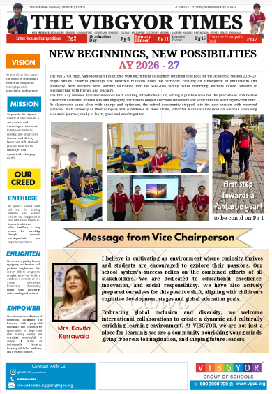

Writing
Literary
Everything I have written, gathered in one place.
Writing is the clearest way I know of paying attention. Most of the pieces here began as a question I could not put down, and a few began as a single line that refused to leave.
What follows is sorted by the shape each idea ended up taking. When something needed thinking all the way through, it became an article. When it needed to be felt rather than explained, it became a poem. And when it needed somebody to live it, it became a story.
Longer arguments live under Essays and Research, where a point needs evidence behind it rather than just a good sentence. And there is a shelf of books I recommend, since the reading and the writing are not really separate things.
Pick a door below.

Articles
Non-fiction: essays, a news report, and letters written to a favourite author and to a departing year.
Read the articles →Essays
Longer arguments, researched and cited. On farming, on AI and more.
Read the essays →Poems
Verse written for sound and image — on the Earth, on the number 108, and on India’s long history.
Read the poems →
Short Stories
Fiction: talking dogs, a world that forgot how to think, a squirrel with a diary, and a smartphone with complaints.
Read the stories →Books to Recommend
What I have been reading, and the books I keep pressing on other people — with the reason attached.
See the books →Highlights
Writing Highlights
Where the writing has been published, and what it has won.
Three pieces published in Beyond the Box
Beyond the Box is an organisation for young writers. Three of my pieces have been showcased there so far , two articles and a poem:
- The rise of AI: A threat or a tool for creativity Article · October 2025
- A healthy mind is the foundation of a meaningful life Article · March 2026
- Mother Earth Poem · February 2025


Part of my school editorial team
Collect information and then make a newspaper about it.
Features: School news,
workshops, PTMs, Interhouse competitions and more.
Also on Medium
Some of my writing is published on Medium rather than here.